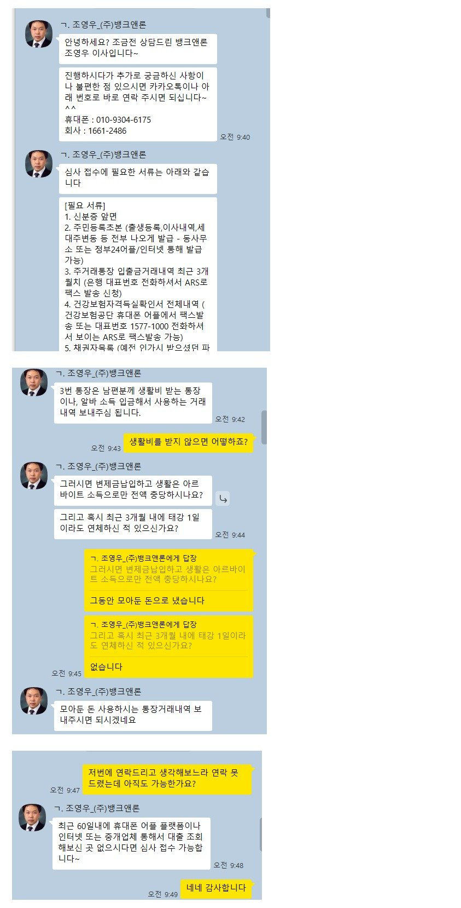
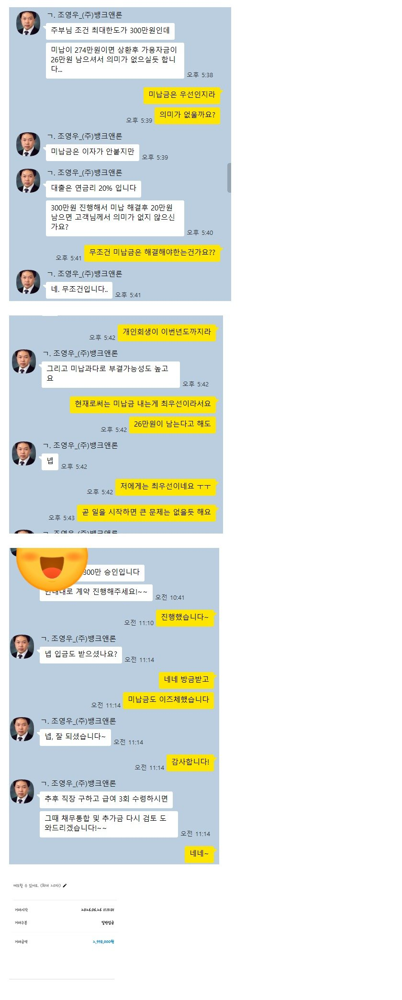

[개인회생자대출] [개인회생자대출] 조영우 이사와의 대출후기
개인회생 진행: 36회중 30회 진행 (3개월 연체)
결혼 후 퇴사와 함께 멀리 이사와 금전적으로 어려웠습니다. 솔직히 개인회생중이라 대출은 안돼고 남편에게는 말하고싶지 않아 많은 고민을 하다가 (주)뱅크앤론을 알게되었습니다. 조영우 이사님께 상담을 받은 후 다시 고민을 하다가 몇일이 지난 후 다시 상담을 드렸는데 친절히 다시 상담해주셨습니다. 대출에 대한 강요도 없고 오히려 현제 시점에 더 좋은점을 고려해주셨습니다. 하지만 연체가 3번이라 저는 고민 없이 진행하였습니다. 재직상태가 아니라 많이는 어려우나 주부 선 에서 대출을 진행해주셨습니다 너무 친절히 하나하나 꼼꼼히 알려주셔서 금방 대출승인을 받을 수 있었습니다! 감사합니다!
https://cafe.naver.com/cityman88/311692


결혼 후 퇴사와 함께 멀리 이사와 금전적으로 어려웠습니다. 솔직히 개인회생중이라 대출은 안돼고 남편에게는 말하고싶지 않아 많은 고민을 하다가 (주)뱅크앤론을 알게되었습니다. 조영우 이사님께 상담을 받은 후 다시 고민을 하다가 몇일이 지난 후 다시 상담을 드렸는데 친절히 다시 상담해주셨습니다. 대출에 대한 강요도 없고 오히려 현제 시점에 더 좋은점을 고려해주셨습니다. 하지만 연체가 3번이라 저는 고민 없이 진행하였습니다. 재직상태가 아니라 많이는 어려우나 주부 선 에서 대출을 진행해주셨습니다 너무 친절히 하나하나 꼼꼼히 알려주셔서 금방 대출승인을 받을 수 있었습니다! 감사합니다!
https://cafe.naver.com/cityman88/311692